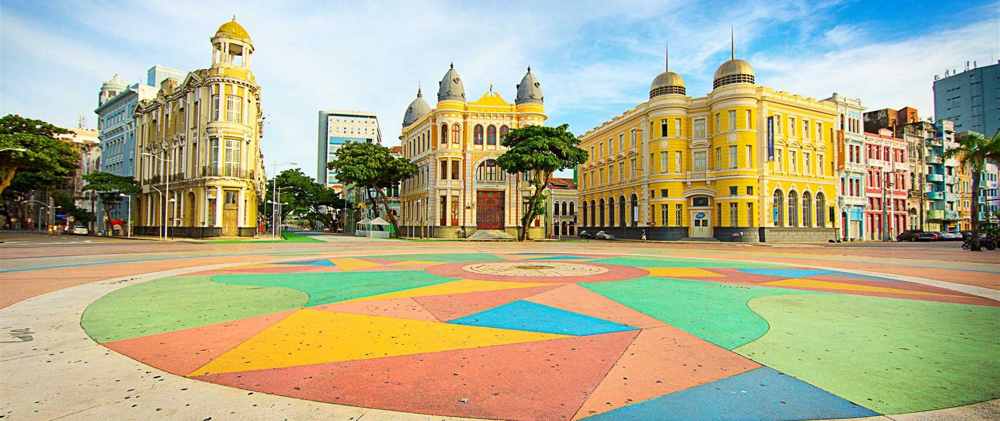

SOBRE O MARCO ZERO
O Marco Zero é um ponto turístico emblemático localizado no Recife Antigo, o bairro histórico da capital pernambucana. Esse local marca o ponto de partida para a contagem oficial das distâncias rodoviárias no estado de Pernambuco. Inaugurado em 1938, o Marco Zero é um dos símbolos da revitalização do Recife Antigo, transformando-se em um local de grande valor cultural e turístico. Além de ser um marco geográfico, o local é cercado por atrações culturais, como o Parque das Esculturas de Francisco Brennand e a Praça do Marco Zero, onde frequentemente acontecem eventos, feiras e shows. A área também oferece uma vista privilegiada do rio Capibaribe e do Porto do Recife. É um ponto de encontro popular tanto para os moradores quanto para turistas.
